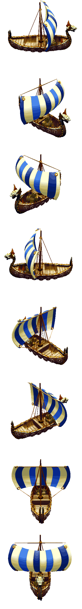
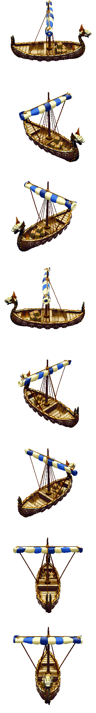
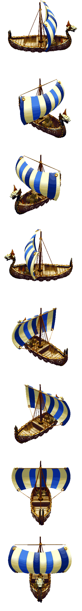

Tribe1 viking (Vikings)Type / job ID3Animation job ID52Native nameship smallEnglishShipSex / ageNoneNative allowedTrueParent chain (baseatomics)[52]Confidence{"sourceMapping": "SOURCE_COMPLETE", "framePixels": "PIXEL_CONFIRMED (per frame; see Catalogs/pixel_validation.csv)", "palette": "SOURCE_BODY_PALETTE", "shadow": "Coverage mask only; native destination darkening -> PRESENTATION_APPROXIMATION", "timing": "Native frame order and selection rules recorded; tick-to-seconds rate UNKNOWN"}Native references{"Game.exe": ["0x0048BD66 GraphicsAnimationRegistry_LoadFromCif", "0x0048CEA1 BobSeq global lookup", "0x00494AE6 frame selection", "0x004803D5 creation binding/palette", "0x00480576 job-change rebinding", "0x0048B258 random palette patches", "0x0049B930 shadow destination darkening"], "cpp": "MobileSpriteRegistry / MobileSpriteRuntimeOwner / ProductionWorldCompositor"}Vehicle definitiontype [3] name ['ship small'] logicsize [2] stockslots [50] stockvector [2, 4] passengerslots [10] vehicleslots [1] logicpassenger [5] logicpassenger [6] logicpassenger [7] logicpassenger [8] logicpassenger [9] logicpassenger [10] logicpassenger [11] logicpassenger [12] logicpassenger [13] logicpassenger [14] logicpassenger [15] logicpassenger [16] logicpassenger [17] logicpassenger [18] logicpassenger [19] logicpassenger [20] logicpassenger [21] logicpassenger [22] logicpassenger [23] logicpassenger [24] logicpassenger [25] logicpassenger [26] logicpassenger [27] logicpassenger [28] logicpassenger [29] logicpassenger [30] logicpassenger [31] logicpassenger [32] logicpassenger [33] logicpassenger [34] logicpassenger [35] logicpassenger [36] logicpassenger [37] logicpassenger [38] logicpassenger [39] logicpassenger [40] logicpassenger [41] logicpassenger [42] logicpassenger [43] logicpassenger [44] logicpassenger [45] logicpassenger [46] logicpassenger [47] logicpassenger [50] logicpassenger [51] logicpassenger [54] passengervector [2, 4] logiccommander [24] debugcolor [0, 0, 100] debugradius [10]Animation job evidenceanimation job = vehicle type + 49; job types 50..55 are vehicle_* with English names Handcart/Ox Cart/Ship/Ship/Catapult/Ox Cart Framework; Vehicle+0x1EC holds 0x32..0x37
Graphics bindings
| phase | section | inherited from | body variants (selector: body / shadow) | head variants | palettes | random palettes |
|---|---|---|---|---|---|---|
| initial | 3 | 0: LS_vehicles / LS_vehicles_s atlas | human_Ship01 |
Animations
Sheets: one row per native direction (0..7, only directions with frames), columns in native frame-list order, shared anchor. Colours use the declared base palette; runtime RNG palette ordinal, player colour and random patches are not applied (PRESENTATION_APPROXIMATION). Shadow masks are kind-2 coverage DATA.
atomic 2 viking_ship_small_idle_short_a | BobSeq (absolute) | section 928 | mode 0 | length 12
frame = min(count-1, floor(count*progress/duration)); duration from atomic length



direction frame lists (BOB ids)
[{"direction": 0, "bodyBobs": [8], "headBobs": [8], "status": null}, {"direction": 1, "bodyBobs": [12], "headBobs": [12], "status": null}, {"direction": 2, "bodyBobs": [20], "headBobs": [20], "status": null}, {"direction": 3, "bodyBobs": [24], "headBobs": [24], "status": null}, {"direction": 4, "bodyBobs": [28], "headBobs": [28], "status": null}, {"direction": 5, "bodyBobs": [5], "headBobs": [5], "status": null}, {"direction": 6, "bodyBobs": [0], "headBobs": [0], "status": null}, {"direction": 7, "bodyBobs": [16], "headBobs": [16], "status": null}]atomic 4 UNKNOWN (no tribe setatomic) | BobSeq (absolute) | section 929 | mode 0 | length None
frame = min(count-1, floor(count*progress/duration)); duration from atomic length



direction frame lists (BOB ids)
[{"direction": 0, "bodyBobs": [74], "headBobs": [74], "status": null}, {"direction": 1, "bodyBobs": [78], "headBobs": [78], "status": null}, {"direction": 2, "bodyBobs": [86], "headBobs": [86], "status": null}, {"direction": 3, "bodyBobs": [90], "headBobs": [90], "status": null}, {"direction": 4, "bodyBobs": [94], "headBobs": [94], "status": null}, {"direction": 5, "bodyBobs": [70], "headBobs": [70], "status": null}, {"direction": 6, "bodyBobs": [66], "headBobs": [66], "status": null}, {"direction": 7, "bodyBobs": [82], "headBobs": [82], "status": null}]walk 0 walk | BobSeq (absolute) | section 1389 | mode 0 | length None
frame = frameTick % count (walk; caller frame tick)



direction frame lists (BOB ids)
[{"direction": 0, "bodyBobs": [8], "headBobs": [8], "status": null}, {"direction": 1, "bodyBobs": [12], "headBobs": [12], "status": null}, {"direction": 2, "bodyBobs": [20], "headBobs": [20], "status": null}, {"direction": 3, "bodyBobs": [24], "headBobs": [24], "status": null}, {"direction": 4, "bodyBobs": [28], "headBobs": [28], "status": null}, {"direction": 5, "bodyBobs": [4], "headBobs": [4], "status": null}, {"direction": 6, "bodyBobs": [0], "headBobs": [0], "status": null}, {"direction": 7, "bodyBobs": [16], "headBobs": [16], "status": null}]walk 5 walk carrying good 5 wood | BobSeq (absolute) | section 1390 | mode 0 | length None
frame = frameTick % count (walk; caller frame tick)


direction frame lists (BOB ids)
[{"direction": 0, "bodyBobs": [74], "headBobs": [74], "status": null}, {"direction": 1, "bodyBobs": [78], "headBobs": [78], "status": null}, {"direction": 2, "bodyBobs": [86], "headBobs": [86], "status": null}, {"direction": 3, "bodyBobs": [90], "headBobs": [90], "status": null}, {"direction": 4, "bodyBobs": [94], "headBobs": [94], "status": null}, {"direction": 5, "bodyBobs": [70], "headBobs": [70], "status": null}, {"direction": 6, "bodyBobs": [66], "headBobs": [66], "status": null}, {"direction": 7, "bodyBobs": [82], "headBobs": [82], "status": null}]Atomics declared without a graphics record
84:viking_ship_small_dock
0x00494AE6: lookup fails along the parent chain, then retries selector 0 at the chain root.